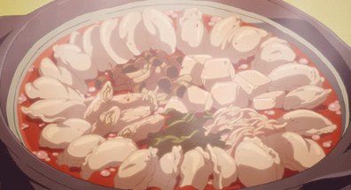

Gyoza Hot Pot

Description
Gyoza Hot Pot is a tasty, shareable dish made in episode 3 of Laid-Back Camp.
Nadeshiko cooks it for Rin as thanks for her help during their previous meeting.
The dish is easy to make and is perfect for keeping warm on cold nights (*^▽^*)
Ingredients
- 3 qt water
- 2 tbsp mirin
- 1 tbsp shoyu
- 1/2 tsp red pepper paste
- 12 thawed gyoza
- 1/2 pack of enoki mushrooms
- 3 spring onions
- 1 head of napa cabbage
- Choice of 1 noodle pack
Steps
- Chop off the roots of the enoki mushrooms and finely chop the spring onions and cabbage
- Fill a pot with water, mirin, shoyu, and chili paste. Bring it to a boil
- Once the pot is at a rolling boil, reduce the heat to make it simmer
- Add the gyoza, napa cabbage, enoki mushrooms, and your noodle of choice. Let it simmer until tender.
- Top with spring onions, and you're done!
Source: Yatta-Tachi
Home